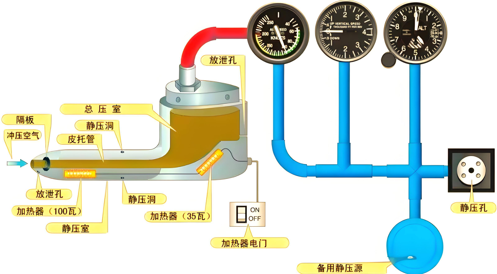
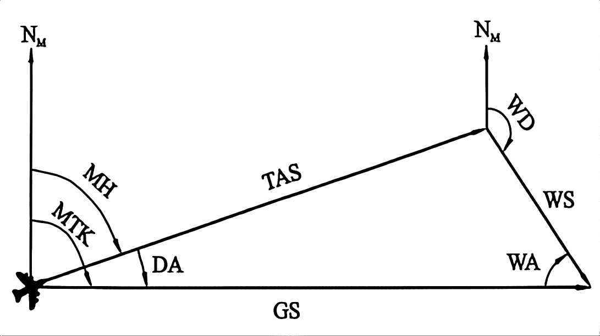

1初级
襟翼、副翼、升降舵的英文是？
A. flap aileron elevator
B. wing aileron rudder
C. flap aileron rudder
2初级
升力来自于根据机翼的设计特点，其产生的【 】
A. 机翼上下表面的正压强
B. 机翼下表面的负压和上表面的正压
C. 机翼下表面的正压和上表面的负压
3初级
航向：飞机横轴前方的指向【真航向True Heading,TH和 磁航向Magnetic Heading,MH】
A. 对
B. 错
4中级
飞机水平协调转弯的时候，随着坡度的增加，飞机失速速度？
A. 减小
B. 增大
C. 不变
5中级
全静压系统，又称“空速管系统”，是指用来收集【 】的全压和静压，并把数据输送给飞行仪表和传感器。

A. 气压
B. 气流
C. 风速
6中级
航母着舰时挂住第【 】个阻拦索是最标准的。
A. 1
B. 2
C. 3
7中级
最佳爬升率速度【 】是指飞机在爬升过程中能够获得最大高度增量的飞行速度。在这个速度下，飞机能够在最短时间内爬升到指定高度，而不考虑所需的水平距离。
A. Vx
B. Vy
C. Va
8初级
至少【 】颗卫星才能给GPS提供三维位置信息。
A. 2
B. 3
C. 4
9初级
舰载机起飞和着舰时，航空母舰应当？
A. 向着风来向停止向前航行
B. 向着风来向尽可能高速的向前航行
C. 顺着风来向尽可能高速的向前航行
10中级
当在【 】时，指示空速等于地速。
A. 海平面标准大气条件下
B. 无风状态下
C. 不可能
11初级
起飞跑道航向320 ，则飞机在左起落航线四边的时候，航向是?
A. 230
B. 050
C. 140
12初级
extra300s飞机驾驶舱有几个座位？
A. 1
B. 2
C. 3
13初级
【 】种天气现象被称为航空器的天敌?
A. 雷暴天气
B. 大风天气
C. 雾霾天气
14中级
飞机下降时，其迎角【 】
A. 大于零
B. 小于零
C. 等于零
15初级
目前世界上研制成功的5款隐形战机分别是【 】型号。
A. F-22、F-35、T-50、歼-20、歼-31
B. F-15、K-50、歼-31、SU-27、A-10
C. F-20、初教-六、F-35、T-50、歼-31
16初级
下列哪个代表滑行道F？
A. taxi way F
B. taxi way E
C. runwayF
17中级
螺旋桨的副作用有哪些？
A. 滑流扭转作用、反作用力矩、螺旋桨进动、对称载荷
B. 滑流扭转作用、反作用力矩、螺旋桨进动、不对称载荷
C. 滑流扭转作用、反作用力矩、螺旋桨效应、不对称载荷
18中级
跑道编号为08，飞机处于该跑道的五边，当风向为100，风速10kts，使用航向法修正航迹保持在五边飞行时，飞机的纵轴指向在？
A. 跑道右侧
B. 跑道方向
C. 跑道左侧
19初级
【 】样的飞机不需要飞行员驾驶?
A. 固定翼飞机
B. 自转固定翼飞机旋翼机
C. 无人机
20初级
雷达是靠【 】来探测到飞机的。
A. 微波
B. 无线电波
C. 声波
21中级
Su33航母着舰项目中的航母是使用【 】方式使飞机起飞的？
A. 滑跃式
B. 牵引钢索
C. 火箭助推器
22初级
建国初期的朝鲜战争中，中国人民空军使用的战斗机主战机型是？
A. 米格-15
B. 米格-17
C. 苏-27
23初级
飞机在什么情况下会发生失速？
A. 只会在速度小的时候
B. 只会在速度大的时候
C. 在任何速度的时候都有可能
24初级
我国自行研制的两款隐形战机分别是【 】型号。
A. 歼10、歼11
B. 歼20、歼31
C. 轰6、轰10
25中级
飞机在地面起飞滑跑阶段，如果是右侧风，则飞机会向（ ）偏转，需要踩（ ）舵进行修正。
A. 左 右
B. 右 左
C. 右 右
26中级
单发右旋螺旋桨发动机的飞机在起飞滑跑时， 机头会【 】
A. 向左偏转
B. 向右偏转
C. 无偏转
27中级
当飞机下降率不变，飞机地速越大，下降相同高度所飞过的地面投影距离则？
A. 一样
B. 越长
C. 越短
28中级
为了减少左转弯的半径，可以在左压杆的同时【 】
A. 向前推杆
B. 向后拉杆
C. 向右蹬舵
29初级
当姿态仪显示飞机仰角为10度，这时飞机的状态是【 】
A. 上升
B. 下降
C. 不确定
30初级
AOA攻角(迎角)是指什么？
A. 飞机纵轴与地平线夹角
B. 飞机横轴与天地线夹角
C. 飞机机翼弦线与相对来流夹角
31初级
在风的影响下，航迹和航线可能不一致，航迹线偏离航向线的角度叫做【 】
A. 偏航角（Yaw Angle）简称 偏航（YA）
B. 偏流角（Draft Angle）简称 偏流（DA）
C. 偏极角（Angle of Polarization）简称 偏极（AP）
32中级
Su33航母着舰使用【 】软件平台。
A. FC2
B. FSX
C. DCS
33中级
一“马赫”是【 】
A. 表示每小时多少海里
B. 表示每小时多少公里
C. 表示声音一小时所传播的距离
34中级
飞机的哪几个飞行仪表是由全静压系统获取飞行数据？
A. 空速表、转弯侧滑指示仪、高度表
B. 空速表、高度表、升降速率表
C. 转弯侧滑指示仪、高度表、升降速率表
35中级
在不同的地方和不同季节，太阳光照时间不一样，所以，在实际工作中，往往在能见度低于【 】时，就会将机场跑道两侧的导航灯亮起，开始按夜航标准进行管制。
A. 500 m
B. 1 km
C. 2 km
D. 5 km
36中级
飞机坡度增加失速速度【 】
A. 减小
B. 增加
C. 不变
37中级
飞机速度不变，在失速临界迎角之前，飞机的升力随着迎角的增加而？
A. 增加
B. 减小
C. 不变
38初级
飞机能在太空中飞行吗？
A. 不能，只能在地球的大气层内飞行
B. 能
C. 不能，因为发动机效率不高
39中级
逆风飞行会增加还是减小地速【 】
A. 增加
B. 无影响
C. 减小
40中级
高度越高，相同表速下，真空速越【 】
A. 大
B. 小
C. 不变
41中级
飞机飞行的航向为360，此时风速风向为180/20节，飞机真空速为100kts ，则地速为？
A. 110kts
B. 120kts
C. 90kts
42初级
航向330是哪个方向？
A. 西北
B. 西南
C. 东北
43中级
最佳爬升角速度【 】是指飞机在给定的水平距离内可以获得最高高度的速度。随着高度的增加，最佳爬升角速度通常会缓慢增加，这是因为随着高度增加，空气密度降低，发动机可用推力减小，为维持最大爬升角，需提高指示空速以补偿推力下降，因此Vx增大。单选题
A. Vx
B. Vy
C. Va
44初级
在我国，正规的模拟飞行各类赛事官方主办单位为中国航空运动协会，中国航协的缩写是【 】
A. ASFC
B. AOPA
C. FAA
45中级
地速的缩写是【 】
A. Indicated Airspeed,IAS
B. True Airspeed,TAS
C. Ground Speed,GS
46初级
美国研制的两款隐形战机是【 】型号。
A. J-10、J-31
B. F-22、F-35
C. T-50、SU-30
47中级
飞机以60度坡度水平协调转弯时，人承受【 】G 过载。
A. 3
B. 2
C. 1
48初级
按照国际惯例，每日太阳落下的【 】小时之前到次日太阳升起的【 】小时之后，称为夜航时间
A. 0.5
B. 1
C. 1.5
D. 2
49初级
下列哪个不是速度单位?
A. 马赫
B. 海里
C. 节
50初级
当塞斯纳172飞行时，使用配平向下转动，使得飞机获得相当于拉杆的效果，则位于升降舵后缘的配平调整片？
A. 向下偏转
B. 向上偏转
C. 不一定
51初级
俄罗斯研制的一款隐形战机是【 】型号.
A. T-50
B. F-22
C. J-20
52中级
当飞机处于倒飞状态时，向后拉杆飞机会【 】
A. 增加高度
B. 向左飞行
C. 降低高度
53初级
为了让飞机机头下俯，需要将操纵杆【 】
A. 后拉
B. 前推
C. 中置不动
54初级
大型客机使用哪些导航方式【 】
A. 惯性导航、无线电、GPS
B. 地形匹配导航、无线电、GPS
C. 星空导航、罗盘导航、GPS
55中级
.航母着舰时飞机靠【 】钩住阻拦索。
A. 着舰钩
B. 前起落架
C. 主起落架
56初级
航线：从起点到终点的预定航行路线
A. 对
B. 错
57初级
舰载飞机是指【 】
A. 以航空母舰为起降基地的军用飞机
B. 安装在航空母舰上的飞行装置
C. 携带火箭的飞机
58中级
本场五边竞赛时，地面效应会【 】升力。
A. 增加
B. 减小
C. 保持
59中级
指示空速的缩写是【 】
A. Indicated Airspeed,IAS
B. True Airspeed,TAS
C. Ground Speed,GS
60初级
转弯侧滑仪指示小飞机右倾，小球偏右，表示飞机【 】
A. 内侧滑
B. 外侧滑
C. 无侧滑
61中级
地速等于【 】加上【 】。V地=V真空+V风·cos风向角度
A. 真空速 风速
B. 表速 风速
C. 指示空速 风速
62初级
当操纵杆（盘）向左压，飞机向左横滚运动，则左侧副翼【 】右侧副翼【 】
A. 向上 向上
B. 向上 向下
C. 向下 向上
63初级
航迹：飞机相对地面运动所经过的路线【真航迹角TTK和 磁航迹角MTK】
A. 对
B. 错
64中级
飞机左转弯，【 】侧副翼向上翘
A. 左侧
B. 右侧
C. 两侧
65初级
前三点起落架飞机着陆时，应当哪个起落架先接地?
A. 前起落架
B. 后主起落架
C. 前后起落架同时
66中级
根据向量合成的法则，【 】向量、【 】向量和【 】向量构成一个三角形，叫做航行速度三角形（又称风三角形）。它是航位推算、航线规划及飞行性能计算的核心工具。

A. 真空速、风速、地速
B. 空速、风速、地速
C. 真空速、航速、风速
67中级
地面效应的作用范围为机身距离地面【 】
A. 一个翼展以外
B. 两个翼展以内
C. 一个翼展以内
68初级
飞机是靠【 】产生升力的。
A. 机翼
B. 发动机
C. 尾翼
69初级
当在空中看到一架飞机在远处，机翼上在我们的左侧方位是绿色的灯光，我们的右侧方位是红色灯光，则该飞机的飞行方向是？
A. 与我们同向飞行
B. 从我方右侧飞向左侧
C. 与我们相对飞行
70中级
ASFC官方全国性模拟飞行锦标赛本场五边争霸赛中会加入侧风，侧风大小的范围是【 】
A. 10-20节
B. 5-15节
C. 15-30节
71中级
当在【 】时，指示空速等于真空速。
A. 海平面标准大气条件下
B. 无风状态下
C. 不可能
72初级
一般表示飞行器速度的单位是【 】
A. 马赫
B. 节
C. 千米/小时
73中级
本场五边争霸赛中，第三边的标准飞行高度是【 】英尺。
A. 500
B. 800
C. 1100
74中级
右转螺旋桨飞机，螺旋桨滑流使飞机有向什么方向转动的趋势？
A. 绕立轴向右偏转，绕纵轴向左滚转
B. 绕立轴向左偏转，绕纵轴向右滚转
C. 绕立轴向左偏转，绕纵轴向左滚转
75中级
在指示空速一定的情况下，高度增加，空气密度降低，真空速【 】
A. 增加
B. 减小
C. 不变
76初级
人类用来探测和发现飞机的主要仪器是【 】
A. 雷达
B. 声呐
C. 红外线
77中级
当飞机在大坡度转弯中发生了失速时，改出失速的最重要动作是？
A. 迅速改平坡度
B. 向前顶杆减小迎角
C. 增加发动机功率
78中级
“超音速战机”是指【 】
A. 指飞行声音大的战斗机
B. 指飞行速度超过声音传播速度的战斗机
C. 指飞行速度超过光速的战斗机
79中级
真空速的缩写是【 】
A. Indicated Airspeed,IAS
B. True Airspeed,TAS
C. Ground Speed,GS
80中级
侧风中巡航，若右侧风，则为了使飞机按计划航迹飞行，机头指向偏在计划航迹磁航向的【 】
A. 右侧
B. 左侧
C. 无变化
81中级
飞机的坡度增加，升力的垂直分量【 】
A. 增大
B. 减小
C. 保持不变
82中级
本场五边训练中跑道入口处设定了最低高度，飞机不得低于【 】英尺飞跃跑道入口。
A. 30
B. 40
C. 50
83初级
飞机在空中飞行时害怕遇上飞行小鸟最重要的原因是【 】
A. 小鸟撞破驾驶舱玻璃
B. 小鸟容易被吸入飞机的发动机，造成飞机的故障
C. 驾驶员害怕小鸟撞伤自己
84中级
飞行中遇到左侧滑，机头【 】
A. 左偏
B. 右偏
C. 不偏
85中级
第十届珠海航展上参展的一款由我国自行研制的隐形战机是【 】型号。
⚠ 史实争议：歼-20 并非在第十届（2014年）珠海航展推出，首次公开亮相为 2016 年第十一届珠海航展；题库答案以金数据为准。
A. 歼20
B. 歼11
C. 轰10
86初级
飞机是逆风还是顺风起飞？
A. 顺风
B. 逆风
C. 都可以
87中级
采用单发右旋螺旋桨发动机的飞机在起飞前滑跑时易【 】
A. 向左偏转
B. 向右偏转
C. 无偏转